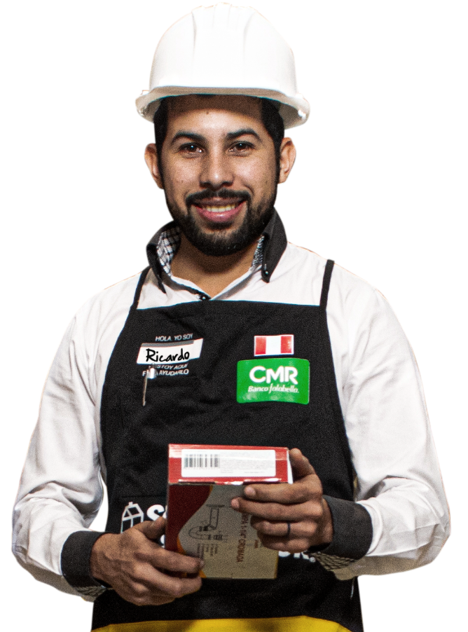
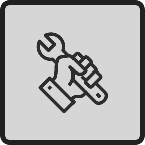

Nuestro servicio de Soporte Técnico ofrece a nuestros clientes asistencia técnica a través de
todas nuestras tiendas y canales de venta a distancia.
EL MEJOR RESPALDO

De tus productos con el fin de mantener a salvo tu inversión y conservar la vida útil de tu equipo.
Te brindamos asesoría técnica personalizada y un amplio soporte integral que va dirigido al especialista, ama de casa, maestros de obra y toda la industria en general, a través del uso, diagnóstico, mantenimiento y reparación de productos eléctricos o a combustión.
DESCUBRE TODOS LOS BENEFICIOS QUE TENEMOS PARA TÍ
Asesoria técnica
EN OBRA A DOMICILIO
Nuestro servicio de asesoría técnica a obra o domicilio le garantiza un correcto manejo de su herramienta en la comodidad de su hogar u obra, a través de la explicación técnica y funcional de equipos eléctricos y combustión
Solicita nuestro servicio y participa junto a todos tus operarios o miembros de tu familia, recibe orientación técnica de nuestros productos y aprende a manejar correctamente tus herramientas para garantizar un mayor tiempo de vida útil de tu equipo.
Nuestro servicio de asesoría técnica a obra o domicilio le garantiza un correcto manejo de su herramienta en la comodidad de su hogar u obra, a través de la explicación técnica y funcional de equipos eléctricos y combustión
Solicita nuestro servicio y participa junto a todos tus operarios o miembros de tu familia, recibe orientación técnica de nuestros productos y aprende a manejar correctamente tus herramientas para garantizar un mayor tiempo de vida útil de tu equipo.
Ver Términos y condiciones -
1
El servicio no incluye: instalación, repuestos, insumos, transporte ni reparación.
2
Servicio no tiene costo para el cliente, el tiempo de atención es de máximo 3 días hábiles contados a partir de la solicitud del cliente.
3
La asesoría técnica a domicilio aplica para herramientas de tipo eléctrico y combustión con un costo mayor o igual a S/.400 soles.
4
No aplican compras acumulables.
5
Coordina el servicio en cualquier de nuestras tiendas o llama al numero (01) 419 2000 opción 2.
6
Servicio aplica para la ciudades de Piura, Trujillo, Arequipa y Lima.
Llamar y cordina (01)419 2000
Registramos tus datos

Recibe asesoria en tu obra a dmicilio
Obtén tu informe técnico de visita
Visitas técnicas por
FALLA DE PRODUCTOS
¿Tienes algún problema con tus electrodomésticos, herramientas, muebles, cerámicos, porcelanatos, inodoros, muebles de terraza o cualquier otro producto que compraste en nuestras tiendas y te dificulte traerlo?
¿Tienes algún problema con tus electrodomésticos, herramientas, muebles, cerámicos, porcelanatos, inodoros, muebles de terraza o cualquier otro producto que compraste en nuestras tiendas y te dificulte traerlo?
No te preocupes, nuestro servicio de visita técnica a domicilio te brinda la solución para el diagnóstico, mantención y reparación de tus productos en la comodidad de tu hogar o empresa.
Acércate a cualquiera de nuestras tiendas, visita nuestro centro de atención al cliente o puedes solicitar solicitar este servicio a través de nuestro Call Center
Ver Terminos y condiciones
1
Aplica para productos comprados en nuestras tiendas de marcas propias y/o homologadas con nuestro servicio técnico, para mayor información consulta en nuestros centros de atención al cliente.
2
Cliente debe presentar su documento de compra para solicitar el servicio, en caso de no contar con el comprobante, deberá solicitar la búsqueda del mismo en el área de atención al cliente, la cual puede demorar hasta 3 días como máximo.
3
En caso cliente acepte la reparación o mantención, pero por motivos de falta de disponibilidad de repuestos en el mercado, se realizará la devolución del dinero por el mismo medio de pago utilizado.
Diagnóstico
DE FALLAS
¿Alguna de tus herramientas o electrodomésticos se averió o está presentando fallas y quieres darle una solución?
Olvídate de eso, acude a cualquiera de nuestras tiendas y solicita un diagnóstico de tu equipo sin costo alguno, recibe un presupuesto de reparación, evalúalo y recibe una solución lo más pronto posible.
Pregunta por nuestro servicio en nuestros centros de atención al cliente de cualquiera de nuestras tiendas o llamando al
¿Alguna de tus herramientas o electrodomésticos se averió o está presentando fallas y quieres darle una solución?
Olvídate de eso, acude a cualquiera de nuestras tiendas y solicita un diagnóstico de tu equipo sin costo alguno, recibe un presupuesto de reparación, evalúalo y recibe una solución lo más pronto posible.
Pregunta por nuestro servicio en nuestros centros de atención al cliente de cualquiera de nuestras tiendas o llamando al
Ver Terminos y condiciones
1
Aplica para productos comprados en nuestras tiendas de marcas propias y/o homologadas con nuestro servicio técnico, para mayor información consulta en nuestros centros de atención al cliente.
2
Cliente debe presentar su documento de compra para solicitar el servicio, en caso de no contar con el comprobante, deberá solicitar la búsqueda del mismo en el área de atención al cliente, la cual puede demorar hasta 3 días como máximo.
3
En caso cliente acepte la reparación o mantención, pero por motivos de falta de disponibilidad de repuestos en el mercado, se realizará la devolución del dinero por el mismo medio de pago utilizado.
Manteneimiento
PREVENTIVO
Todos los equipos que tienen algún tipo de funcionamiento eléctrico o combustión, requieren y es necesario que reciban algún tipo mantención preventiva de manera periódica, dependiendo su uso, esto con el fin de garantizar una prolongada vida útil de tu herramienta o artefacto.
Todos los equipos que tienen algún tipo de funcionamiento eléctrico o combustión, requieren y es necesario que reciban algún tipo mantención preventiva de manera periódica, dependiendo su uso, esto con el fin de garantizar una prolongada vida útil de tu herramienta o artefacto.
Nuestro servicio de mantenimiento te ofrece soluciones para equipos de construcción, jardín, hidráulicos, aire acondicionado, herramientas inalámbricas, entre otros, al mejor precio del mercado y con garantía Sodimac.
Acércate a cualquiera de nuestras tiendas, visita nuestro centro de atención al cliente o puedes solicitar este servicio a través de nuestro Call Center
Ver Terminos y condiciones
1
Aplica para productos comprados en cualquiera de nuestras tiendas y para marcas propias y/o homologadas con nuestro servicio técnico, para mayor información consulta en nuestros centros de atención al cliente.
2
Cliente debe presentar su documento de compra para solicitar el servicio, en caso de no contar con el comprobante, deberá solicitar la búsqueda del mismo en el área de atención al cliente, la cual puede demorar hasta 3 días como máximo.
3
En caso cliente acepte la reparación o mantención, pero por motivos de falta de disponibilidad de repuestos en el mercado, se realizará la devolución del dinero por el mismo medio de pago utilizado.
Reparación
Y GARANTIA
Nuestro servicio de reparación te garantiza la utilización de repuesto nuevos y genuinos para una mayor tranquilidad y larga duración de tus equipos, confía en los expertos, confía en Sodimac.
Tu tranquilidad es nuestra prioridad, es por ello que somos los únicos en ofrecerte garantía de hasta por 90 días a tu reparación. Si tu equipo presenta fallas de cualquier tipo en este periodo, nosotros nos hacemos cargo de todo, sin costo alguno para ti.
}
Nuestro servicio de reparación te garantiza la utilización de repuesto nuevos y genuinos para una mayor tranquilidad y larga duración de tus equipos, confía en los expertos, confía en Sodimac.
Tu tranquilidad es nuestra prioridad, es por ello que somos los únicos en ofrecerte garantía de hasta por 90 días a tu reparación. Si tu equipo presenta fallas de cualquier tipo en este periodo, nosotros nos hacemos cargo de todo, sin costo alguno para ti.
Ver Terminos y condiciones
1
Aplica para productos comprados en nuestras tiendas de marcas propias y/o homologadas con nuestro servicio técnico, para mayor información consulta en nuestros centros de atención al cliente.
2
Cliente debe presentar su documento de compra para solicitar el servicio, en caso de no contar con el comprobante, deberá solicitar la búsqueda del mismo en el área de atención al cliente, la cual puede demorar hasta 3 días como máximo.
3
En caso cliente acepte la reparación o mantención, pero por motivos de falta de disponibilidad de repuestos en el mercado, se realizará la devolución del dinero por el mismo medio de pago utilizado.
RED DE SERVCIO TÉCNICO
Contamos con 25 centros de ateción a nivel nacional